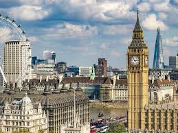

Meghalaya
Meghalaya a state in india
has won the Guinness world record title for the
wettest place on the earth,with about 11,873 millitres of rain annually.
The monsoon season lasts six months ,so make sure you pack an ambrella!
Pakistan

Nuclear weapon is the key equipment for the most of the coutries defence
Pakistan which is located in souht asia become the world's First Islamic
country to attain nuclear power.
London

London is the smallest city in england !!!!
Yeah that's absolutely True .
The city which most of us know today is called Greater London whereas London is
the small portioon of the greater london .It has a population of only 9,123,making
it the smallest in England.
Nepal

Nepal which is considered to the one of the most peaceful country in the world
was closed off from outside the world during Rana regime (1846-1950s).
This was done to pursue the policy of isolation from the external influences
in order to maintain its independence during the British colonial era in souht
Asia.
Japan is ageing

When it comes to japan people relate it with Technology and its emmense soft power
around the worls.But Do you know japan is considered to the oldest country in the world.
28% of the japanese population is aged 65 and older ,the highest proportion in the world .
Further japan have appoximately 70,000 people who are above 100 years.